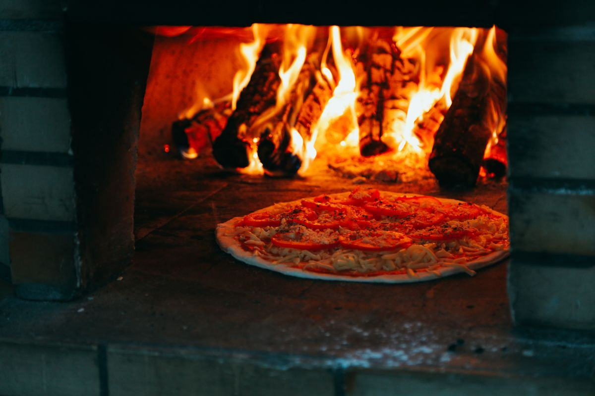

Le four à bois n'est pas une option de décoration. C'est un choix de métier : il donne un rendu que rien d'autre ne reproduit exactement, et il impose en retour un conduit, un stockage, une réglementation et un vrai savoir-faire de conduite du feu. Si vous êtes prêt à assumer les trois, il n'y a pas de meilleur outil. Sinon, mieux vaut le savoir avant de signer.
La cuisson napolitaine n'est pas une cuisson courte par coquetterie : c'est une physique différente.
La sole transmet une chaleur de contact violente qui fait gonfler le cornicione en quelques secondes, pendant que la voûte incandescente colore le dessus par rayonnement. Deux modes de chauffe simultanés, c'est ce qui manque à un four qui plafonne à 350 °C.
Une cuisson éclair garde l'eau à l'intérieur du pâton. Résultat : une pâte souple et humide sous une croûte tachetée. Une même pâte cuite six minutes à 300 °C donnera un tout autre produit — bon, mais pas napolitain.
Le feu visible, l'odeur, le geste du pizzaïolo qui tourne la pizza : c'est un argument commercial réel, qui justifie un ticket moyen plus élevé et qui différencie durablement d'une pizzeria de galerie.
C'est ici que la plupart des projets de four à bois se jouent — ou se bloquent. Traitez-la en premier, avant même de choisir un modèle.
Évacuation dédiée, tubage isolé, section adaptée au four, dépassement en toiture et distances de sécurité aux matériaux combustibles. Dans un immeuble, l'existence d'un conduit exploitable conditionne tout le projet : sans conduit disponible, on ne le crée pas facilement en copropriété. Ramonage deux fois par an minimum, dont une en période de chauffe, avec certificat — votre assureur le réclamera au premier incident.
Les rejets de combustion sont encadrés, et la réglementation locale peut aller plus loin : certaines communes et certains PLU restreignent la combustion de biomasse en zone dense. Le débouché de conduit doit aussi être positionné pour ne pas rabattre les fumées chez le voisin du dessus — c'est la première source de conflit, et un trouble de voisinage se règle rarement à l'amiable. Renseignez-vous en mairie avant la commande, et faites valider le tracé par un fumiste qualifié. Notre page installation et extraction détaille la marche à suivre.
Feuillus durs non traités : chêne, hêtre, charme, frêne. Olivier ou fruitiers pour parfumer. Jamais de résineux — la résine encrasse le conduit, noircit la voûte et donne un goût désagréable. Jamais de palettes ni de bois traité.
Sous 20 %, idéalement autour de 15 %. Un bois humide fume, chauffe mal, encrasse et vous fait perdre une heure de montée en température. Un simple humidimètre à 30 € règle la question à la livraison.
15 à 25 kg par service, 25 à 40 kg sur une journée à deux services, soit couramment 8 à 15 stères sur une année d'exploitation. À budgéter comme un vrai poste, au même titre que l'électricité.
Sec, ventilé, accessible sans traverser la zone de préparation, et séparé du poste de travail pour l'hygiène. Prévoyez aussi la réserve du jour près du four, en bac fermé.
Un four à bois ne se règle pas : il se conduit. C'est ce qui fait sa noblesse, et ce qui décourage ceux qui n'y étaient pas préparés.
Deux à trois heures sur un four en service régulier, quatre à cinq après un arrêt prolongé. Le repère est visuel et vieux comme le métier : la voûte se couvre de suie noire, puis redevient blanche quand la masse est chargée. Tant qu'elle est noire, la sole n'y est pas, quel que soit ce que dit le thermomètre infrarouge sur un point isolé.
Le feu vit sur le côté, on le nourrit régulièrement de petites bûches, on déplace les braises, on balaie la sole. La température varie d'une zone à l'autre de la sole : le pizzaïolo tourne sa pizza et la déplace en fonction. Cela s'apprend en semaines, pas en heures — prévoyez le temps de formation dans votre planning d'ouverture, ou recrutez quelqu'un qui l'a déjà.
Si ce savoir-faire vous manque et que vous voulez malgré tout la flamme, le four rotatif est le bon compromis : sole tournante, cuisson homogène, feu de bois conservé. À l'inverse, si c'est surtout la régularité que vous cherchez, revenez vers le four électrique ou le four à gaz. Notre comparatif quel four à pizza choisir pose les critères à plat.
Brosse en laiton et écouvillon humide après chaque service, jamais de détergent. Les résidus carbonisés donnent un goût amer et finissent par attaquer la pierre. Voir notre guide sole et pierre réfractaire.
La voûte travaille sous les chocs thermiques. De fines fissures sont normales ; celles qui s'élargissent ou laissent passer de la chaleur en façade doivent être reprises au mortier réfractaire par un professionnel.
Deux ramonages certifiés par an, contrôle de l'isolation de la coupole et de l'état du tubage. C'est ce qui conditionne votre couverture d'assurance et la sécurité de l'établissement.
Fourchettes hors taxes sur du matériel neuf, hors conduit, maçonnerie d'habillage et mise en œuvre.
| Configuration | Capacité | Poids indicatif | Prix HT |
|---|---|---|---|
| Four à bois compact préfabriqué | 4 à 6 pizzas | 600 – 900 kg | 6 000 – 9 000 € |
| Four à bois traditionnel Ø 110-120 cm | 6 à 8 pizzas | 1 000 – 1 600 kg | 9 000 – 14 000 € |
| Four à bois maçonné sur mesure | 8 à 10 pizzas | 1 800 – 2 800 kg | 14 000 – 20 000 € |
| Conduit, tubage & sortie de toit | — | — | 1 500 – 5 000 € |
| Bois de chauffe (année d'exploitation) | 8 à 15 stères | — | 800 – 2 500 € |
Enveloppe matériel : 6 000 à 20 000 € HT. Le conduit et l'habillage peuvent représenter 20 à 30 % de plus — c'est le poste le plus souvent sous-estimé. Détail complet dans notre guide des prix.
Conduit, encombrement, poids au sol : on fait vérifier la faisabilité avant de vous envoyer un chiffrage.